原文连接:https://www.cnblogs.com/pandefu/p/10766629.html
上个项目中用到了Socket通讯,项目中直接借助SuperSocket实现,但是我觉得这毕竟是一个我没接触过的东西,所以也顺便学习了一下原生socket的使用,做了一个socket服务器与客户端的开发.本人菜鸟一枚,只做了一个简单的实现,希望有看到我博客的大佬不吝指点,抱拳!
socket通讯的相关知识的话，在博客园中的大佬们总结的贴子已经非常多，也很详细，忘记了就在去看。
这里总结一下原生的Socket和SuperSocket的使用（官方定义:SuperSocket 是一个轻量级, 跨平台而且可扩展的 .Net/Mono Socket 服务器程序框架。你无须了解如何使用 Socket, 如何维护 Socket 连接和 Socket 如何工作，但是你却可以使用 SuperSocket 很容易的开发出一款 Socket 服务器端软件，例如游戏服务器，GPS 服务器, 工业控制服务和数据采集服务器等等。）
下边是一个Socket测试工具 十分好用!
链接：https://pan.baidu.com/s/1ykEofUIZKE2yhe3mMyRbJw
提取码：m2nk
先从服务器端说起。服务器端先初始化Socket，然后与端口绑定(bind)，对端口进行监听(listen)，调用accept阻塞，等待客户端连接。在这时如果有个客户端初始化一个Socket，然后连接服务器(connect)，如果连接成功，这时客户端与服务器端的连接就建立了。客户端发送数据请求，服务器端接收请求并处理请求，然后把回应数据发送给客户端，客户端读取数据，最后关闭连接，一次交互结束。
原生Socket实现SocketServer:


1 using System;
2 using System.Collections.Generic;
3 using System.ComponentModel;
4 using System.Data;
5 using System.Drawing;
6 using System.Linq;
7 using System.Text;
8 using System.Threading.Tasks;
9 using System.Windows.Forms;
10 using System.Net.Sockets;
11 using System.Net;
12 using System.Threading;
13
14 namespace DotnetSockets
15 {
16 public partial class DotnetSocketServer : Form
17 {
18 public DotnetSocketServer()
19 {
20 InitializeComponent();
21 }
22
23 //存储已连接的客户端的泛型集合
24 private static Dictionary<string, Socket> socketList = new Dictionary<string, Socket>();
25
26 /// <summary>
27 /// 接收连接
28 /// </summary>
29 /// <param name="obj"></param>
30 public void StartServer(object obj)
31 {
32 string str;
33 while (true)
34 {
35 //等待接收客户端连接 Accept方法返回一个用于和该客户端通信的Socket
36 Socket recviceSocket = ((Socket)obj).Accept();
37 //获取客户端ip和端口号
38 str = recviceSocket.RemoteEndPoint.ToString();
39 socketList.Add(str, recviceSocket);
40 //控件调用invoke方法 解决"从不是创建控件的线程访问它"的异常
41 cmb_socketlist.Invoke(new Action(() => { cmb_socketlist.Items.Add(str); }));
42 richTextBox1.Invoke(new Action(() => { richTextBox1.AppendText(str + "已连接" + "\r\n"); }));
43
44 //Accept()执行过后 当前线程会阻塞 只有在有客户端连接时才会继续执行
45 //创建新线程,监控接收新客户端的请求数据
46 Thread thread = new Thread(startRecive);
47 thread.IsBackground = true;
48 thread.Start(recviceSocket);
49 }
50 }
51
52 /// <summary>
53 /// 接收消息
54 /// </summary>
55 /// <param name="obj">客户端socket</param>
56 public void startRecive(object obj)
57 {
58 string str;
59 string ip;
60 while (true)
61 {
62
63 byte[] buffer = new byte[2048];
64 int count;
65 try
66 {
67 //Receive(Byte[]) 从绑定的 Socket 套接字接收数据，将数据存入接收缓冲区。
68 //该方法执行过后同Accept()方法一样 当前线程会阻塞 等到客户端下一次发来数据时继续执行
69 count = ((Socket)obj).Receive(buffer);
70 ip = ((Socket)obj).RemoteEndPoint.ToString();
71 if (count == 0)
72 {
73 cmb_socketlist.Invoke(new Action(() => { cmb_socketlist.Items.Remove(ip); }));
74 richTextBox1.Invoke(new Action(() => { richTextBox1.AppendText(ip + "已断开连接" + "\r\n"); }));
75 break;
76 }
77 else
78 {
79 str = Encoding.Default.GetString(buffer, 0, count);
80 richTextBox1.Invoke(new Action(() => { richTextBox1.AppendText("收到"+ip+"数据 " + str + "\r\n"); }));
81
82 }
83 }
84 catch (Exception)
85 {
86
87
88 }
89 }
90 }
91
92 /// <summary>
93 /// 开启服务器监听
94 /// </summary>
95 /// <param name="sender"></param>
96 /// <param name="e"></param>
97 private void btn_StartListen_Click(object sender, EventArgs e)
98 {
99 //实例化一个Socket对象，确定网络类型、Socket类型、协议类型
100 Socket socket = new Socket(AddressFamily.InterNetwork, SocketType.Stream, ProtocolType.Tcp);
101
102 IPEndPoint IEP = new IPEndPoint(IPAddress.Parse(txt_ip.Text), int.Parse(txt_port.Text));
103 //绑定ip和端口
104 socket.Bind(IEP);
105 //开启监听
106 socket.Listen(10);
107
108 richTextBox1.Invoke(new Action(() => { richTextBox1.AppendText("开始监听" + "\r\n"); }));
109
110 Thread thread = new Thread(new ParameterizedThreadStart(StartServer));
111 thread.IsBackground = true;
112 thread.Start(socket);
113
114
115 #region 该部分实现只适用一个服务器只对应一个客户端
116
117 //Task.Run(() => {
118
119 // string str;
120
121 // while (true)
122 // {
123 // //等待接收客户端连接 Accept返回一个用于和该客户端通信的Socket
124 // Socket recviceSocket = socket.Accept();
125
126 // //Accept()执行过后 当前线程会暂时挂起 只有在有客户端连接时才会继续执行
127 // richTextBox1.Invoke(new Action(() => { richTextBox1.AppendText(recviceSocket.RemoteEndPoint.ToString() + "已连接" + "\r\n"); }));
128
129 // //开启接收数据的任务
130 // Task.Run(() => {
131 // while (true)
132 // {
133 // byte[] buffer = new byte[2048];
134 // int count;
135 // //Receive(Byte[]) 从绑定的 Socket 套接字接收数据，将数据存入接收缓冲区。
136 // //该方法执行过后同上 当前线程会暂时挂起 等到客户端下一次发来数据时继续执行
137 // count = recviceSocket.Receive(buffer);
138 // if (count == 0)
139 // {
140 // richTextBox1.Invoke(new Action(() => { richTextBox1.AppendText(recviceSocket.RemoteEndPoint.ToString() + "已断开连接" + "\r\n"); }));
141
142 // break;
143 // }
144 // else
145 // {
146 // str = Encoding.Default.GetString(buffer, 0, count);
147 // richTextBox1.Invoke(new Action(() => { richTextBox1.AppendText("收到"+recviceSocket.RemoteEndPoint.ToString()+"数据:" + str + "\r\n"); }));
148
149 // }
150 // }
151
152
153 // });
154
155
156 // }
157 //});
158 #endregion
159 }
160
161 /// <summary>
162 /// 向对应客户端发送数据
163 /// </summary>
164 /// <param name="sender"></param>
165 /// <param name="e"></param>
166 private void btn_send_Click(object sender, EventArgs e)
167 {
168 string str = txt_send.Text;
169 byte[] bytes = new byte[2048];
170 bytes = Encoding.Default.GetBytes(str);
171 //获取combobox的值 从泛型集合中获取对应的客户端socket 然后发送数据
172 if (cmb_socketlist.Items.Count != 0)
173 {
174 if (cmb_socketlist.SelectedItem == null)
175 {
176 MessageBox.Show("请选择一个客户端发送数据!");
177 return;
178 }
179 else
180 {
181 socketList[cmb_socketlist.SelectedItem.ToString()].Send(bytes);
182 }
183 }
184 else
185 {
186 richTextBox1.Invoke(new Action(() => { richTextBox1.AppendText("当前无连接的客户端" + "\r\n"); }));
187 }
188 txt_send.Clear();
189 }
190
191 private void DotnetSocketServer_FormClosed(object sender, FormClosedEventArgs e)
192 {
193 System.Environment.Exit(0);
194 }
195 }
196 }接下来实现SocketClient
1 using System;
2 using System.Collections.Generic;
3 using System.ComponentModel;
4 using System.Data;
5 using System.Drawing;
6 using System.Linq;
7 using System.Text;
8 using System.Threading.Tasks;
9 using System.Windows.Forms;
10 using System.Net;
11 using System.Net.Sockets;
12 using System.Threading;
13
14 namespace DotnetSocketClient
15 {
16 public partial class DotnetSocketClient : Form
17 {
18 public DotnetSocketClient()
19 {
20 InitializeComponent();
21 }
22 byte[] buffer = new byte[2048];
23 Socket socket;
24 Thread thread;
25
26 /// <summary>
27 /// 连接服务器
28 /// </summary>
29 /// <param name="sender"></param>
30 /// <param name="e"></param>
31 private void btn_start_Click(object sender, EventArgs e)
32 {
33 try
34 {
35 //实例化socket
36 socket = new Socket(AddressFamily.InterNetwork, SocketType.Stream, ProtocolType.Tcp);
37 //连接服务器
38 socket.Connect(new IPEndPoint(IPAddress.Parse(txt_ip.Text), int.Parse(txt_port.Text)));
39
40 thread = new Thread(StartReceive);
41 thread.IsBackground = true;
42 thread.Start(socket);
43 }
44 catch (Exception ex)
45 {
46 SetMessage("服务器异常:" + ex.Message);
47 }
48
49 }
50 /// <summary>
51 /// 开启接收
52 /// </summary>
53 /// <param name="obj"></param>
54 private void StartReceive(object obj)
55 {
56 string str;
57 while (true)
58 {
59 Socket receiveSocket = obj as Socket;
60 try
61 {
62 int result = receiveSocket.Receive(buffer);
63 if (result == 0)
64 {
65 break;
66 }
67 else
68 {
69 str = Encoding.Default.GetString(buffer);
70 SetMessage("接收到服务器数据: " + str);
71 }
72
73 }
74 catch (Exception ex)
75 {
76 SetMessage("服务器异常:" + ex.Message);
77
78 }
79 }
80
81 }
82 /// <summary>
83 /// 关闭连接
84 /// </summary>
85 /// <param name="sender"></param>
86 /// <param name="e"></param>
87 private void btn_close_Click(object sender, EventArgs e)
88 {
89 try
90 {
91 socket.Shutdown(SocketShutdown.Both);
92 socket.Close();
93 thread.Abort();
94 SetMessage("关闭与远程服务器的连接!");
95 }
96 catch (Exception ex)
97 {
98 SetMessage("异常" + ex.Message);
99 }
100 }
101
102 private void button1_Click(object sender, EventArgs e)
103 {
104 socket.Send(Encoding.Default.GetBytes(txt_send.Text));
105 txt_send.Clear();
106 }
107 /// <summary>
108 /// 添加信息
109 /// </summary>
110 /// <param name="msg"></param>
111 private void SetMessage(string msg)
112 {
113 richTextBox1.Invoke(new Action(() => { richTextBox1.AppendText(msg+"\r\n"); }));
114 }
115 }
116 }接下来测试
因为我们在本地测试,所以使用回环地址为服务的监听地址(127.0.0.1),端口号范围(0~65535)但不能和正在使用的端口号冲突,所以尽量设置大一些的值,本次测试使用端口号 3333,
这里总结一个查看正在使用的端口号的方法:
win+R打开命令提示符,然后输入 netstat -a -n 回车,会列出当前正在使用的协议,内部地址,外部地址和状态
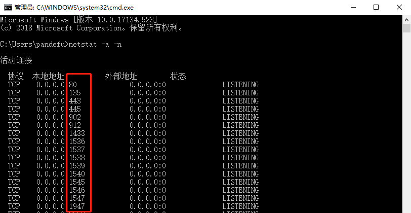
服务器端 输入ip ,输入端口,开启监听 ,客户端输入服务器ip和端口, 点击开始连接
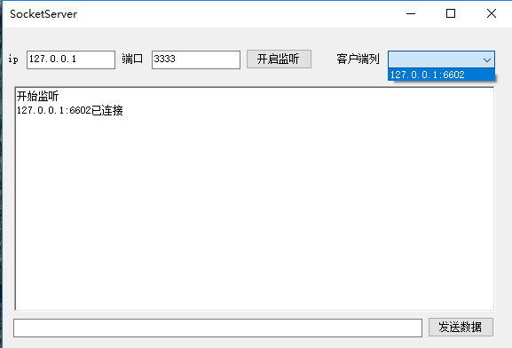
客户端
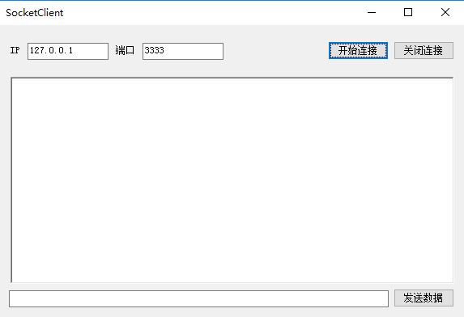
可以看到,客户端点击连接以后服务器已收到客户端的连接,并作出提示,并且将来访客户端的ip和端口号记录
接下来测试 互相发送数据
服务器给客户端发送数据:
从客户端列选择对应客户端ip,然后从下边textbox 输入要发送的数据,点击发送
服务器:
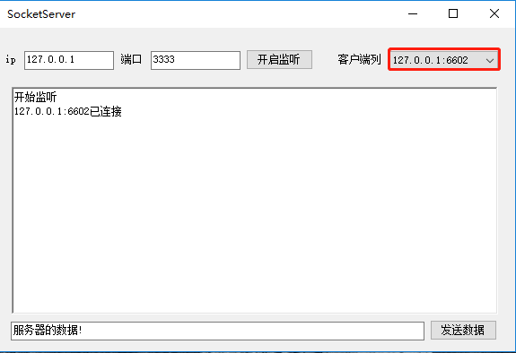
客户端:
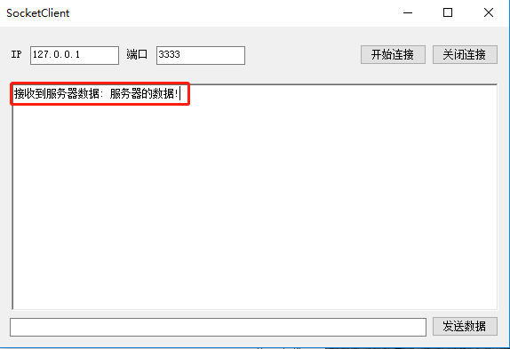
客户端给服务器发送数据:
从客户端的textbox中输入要发送的数据,点击发送
服务器:
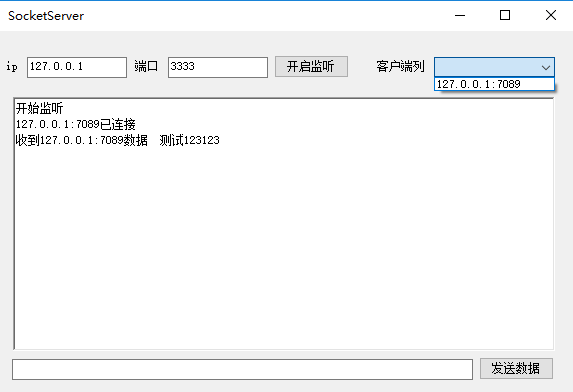
客户端
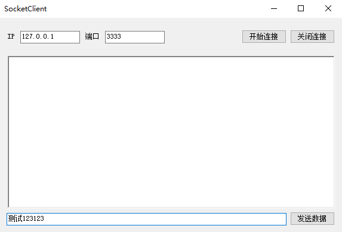
一般情况下,都不会是服务器与客户端一对一的数据交互,接下来 我们借助上边推荐的工具,测试一下多个客户端访问服务器
首先在SocketTool上创建多个客户端,我们可以清楚的看到虽然创建多个客户端,但是端口号都不一样.
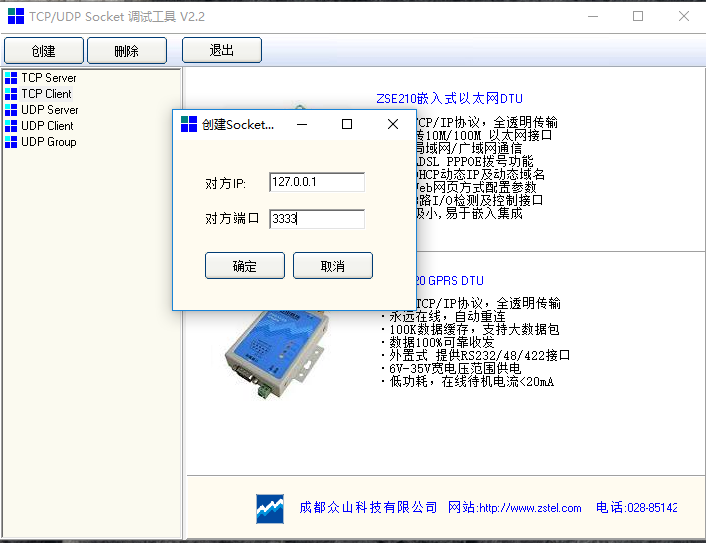
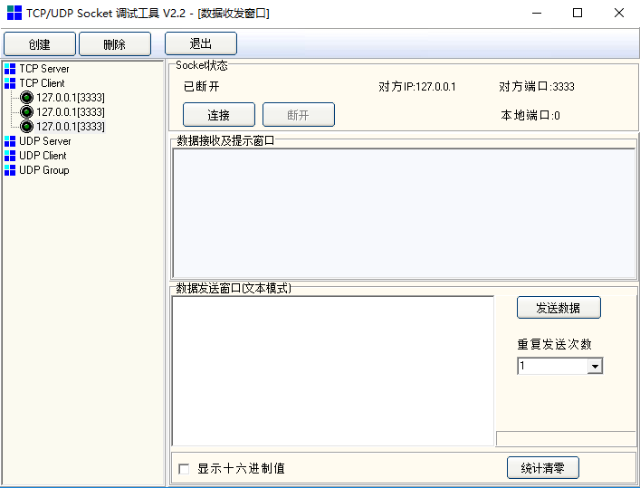
然后将这三个客户端全部连接服务器
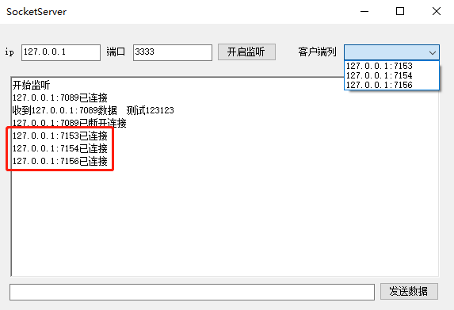
接下来测试数据交互
三个客户端分别给服务器端发送111,222,333
服务器
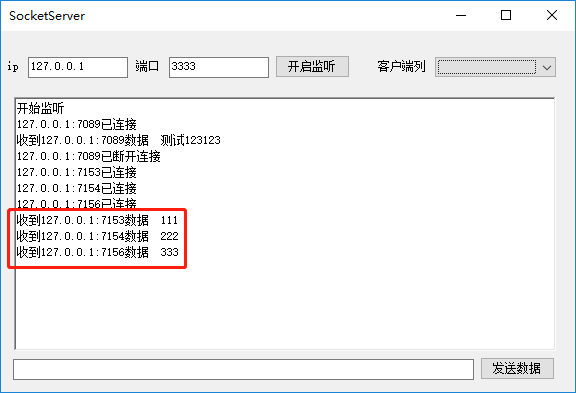
服务器选择端口号为7156的客户端发送数据aaaa
服务器
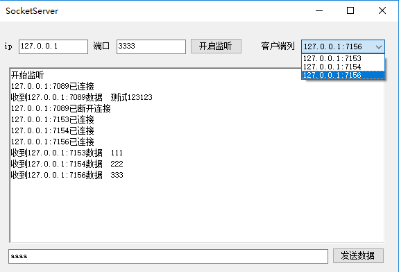
客户端
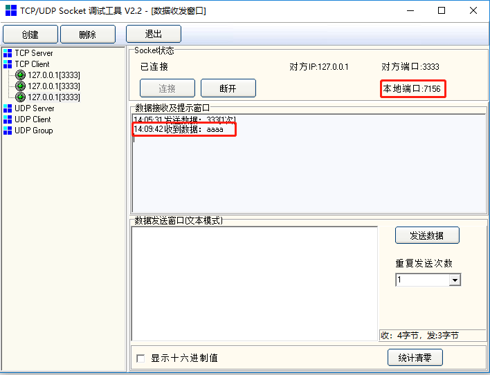
经过上面测试,简直完美(斜眼笑),果然,每做完一个东西所产生的成就感还是令人心情舒畅啊
原生socket开发实现暂时结束,如果有遗忘的,后续更新补充,
感谢各位客官阅读,拜谢(抱拳~)
接下来还要再写一篇 使用Socket服务器程序框架实现SuperSocket实现服务器
socket通讯的学习,这几篇博客对我帮助很大,书面感谢,我也在此记录一下,说不定以后忘了,在回来看看
C# Socket编程(1)基本的术语和概念
C# Socket编程(2)识别网络主机
C# Socket编程(3)编码和解码
C# Socket编程(4)初识Socket和数据流
C# Socket编程(5)使用TCP Socket